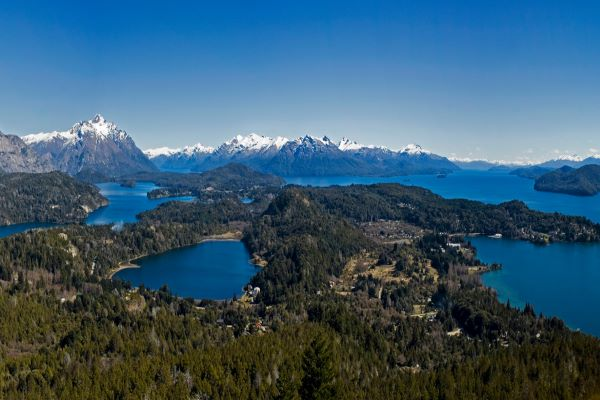

ACTIVIDADES Y LUGARES EN LA CIUDAD
CERROS Y LAGOS

Alberga el centro de sky más grande del hemisferio sur, entre sus
actividades
más
populares se encuentran el sky y el snowboarding, además cuenta con un
amplia
carta
de alojamientos y
gastronomía .A lo largo de toda la montaña podrás disfrutar de los
hermosos
paradores instalados en sus imponentes laderas, con vistas increíbles a
los
lagos
Nahuel Huapi y Gutiérrez, la cordillera de los Andes, el cerro Tronador,
y los
cerros demás circundantes.
Es uno de los lagos más importantes de Bariloche , en él se puede
realizar
Trekking de
montaña, cabalgatas, pesca deportiva, monta bike entre otras
actividades.El Lago
Gutiérrez se encuentra a tan solo 15km de la ciudad de San Carlos de
Bariloche,
en
un valle rodeado por los cerros Otto, Catedral y De la Ventana. Hay
campings,
pequeñas playas y un museo paleontológico para visitar.
Nos ofrece una de las mejores vistas panorámicas del mundo, además,
en su
cumbre
se
encuentra una confitería a la que podemos llegar mediante las aerosillas
del
cerro y
disfrutar allí una
rica merienda o comida con la mejor vista. Desde el cerro Campanario se
pueden
observar los lagos Nahuel Huapi y Moreno, la laguna El Trébol, la
península San
Pedro, la isla Victoria, los cerros Otto, López, Goye, Bellavista,
Catedral,
Capilla, el hotel Llao Llao y las arboledas de Colonia Suiza.